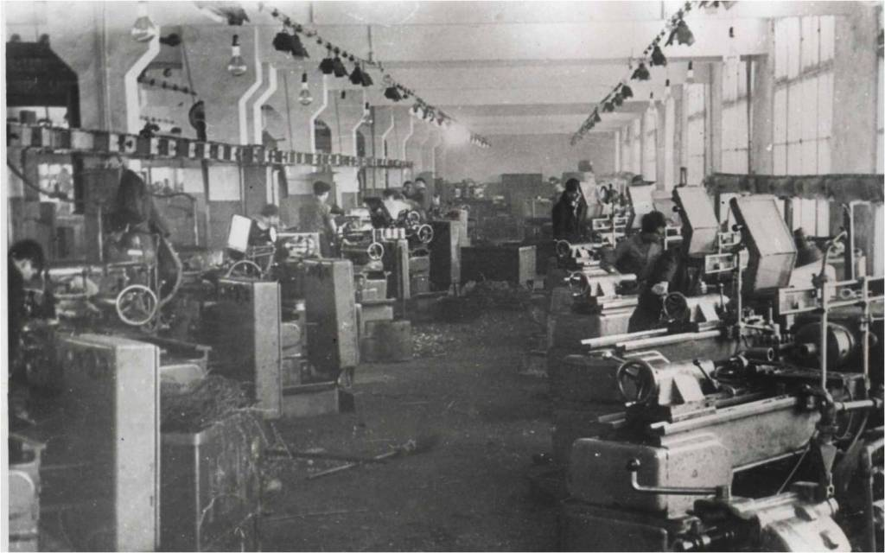

Brought to you by Igor Timohin

$ brew install nodeC:\> choco install nodejs.install$ npm init и отвечаем на вопросыnpm install package-name - установка пакетов вручнуюnpm i package-name - сокращенный вариант--save - сохранение имени пакета в dependencies файла package.json--save-dev - сохранение имени пакета в devDependencies файла package.jsonПри наличии package.json с прописанными пакетами. Вариант для разработки:
npm install
или
npm i устанавливаются пакеты прописанные в секциях dependencies и в devDependencies
При наличии package.json с прописанными пакетами. Вариант для production:
npm install --production
или
npm i --production Пакеты из devDependencies не устанавливаются
Устанавливаем Bower, пакеты и их зависимости
$ npm install -g bower
$ cd /path-to-app && bower init # Инициализируем
$ bower install jquery # registered package
$ bower install desandro/masonry # GitHub shorthand
$ bower install git://github.com/user/package.git # Git endpoint
$ bower install http://example.com/script.js # URL
Ищем пакеты, сохраняем зависимости проекта
$ bower search package-name
$ bower install bootstrap --save
$ bower install social-likes --save-dev
Пакеты будут установлены в /path-to-app/bower_components/
bower.json - конфигурационный файл Bower
Обновляем, удаляем
$ bower update # Обновление версий пакетов (по semver)
$ bower uninstall package-name #
Пакеты будут установлены в /path-to-app/bower_components/
bower.json - конфигурационный файл Bower


npm install --global gulp - сначала глобальноnpm install --save-dev gulp - затем как зависимость проектаnpm install --save-dev gulp-utiltouch gulpfile.js
var gulp = require('gulp'),
gutil = require('gulp-util');
gulp.task('default', function() {
return gutil.log('Gulp is running!')});
Общего назначения
/* Gulp plugins */
var gulp = require('gulp'), // Task runner
watch = require('gulp-watch'), // Watch, that actually is an endless stream
rename = require("gulp-rename"), // Rename files
del = require('del'), // Delete something
rigger = require('gulp-rigger'), // // Include content of one file to another
size = require('gulp-size'), // Display the size of something
path = require('path'),
runSequence = require('run-sequence').use(gulp), // Run a series of dependent gulp tasks in order
HTML, Less, CSS
processhtml = require('gulp-processhtml'), // Plugin uses Denis Ciccale's node-htmlprocessor to process/transform html files
concat = require('gulp-concat'), // Concatenates files
streamqueue = require('streamqueue'), // Pipe queued streams progressively, keeping datas order.
sourcemaps = require('gulp-sourcemaps'), // Write source maps
less = require('gulp-less'), // Compile Less to CSS
lessReporter = require('gulp-less-reporter'), // Error reporter for gulp-less
autoprefixer = require('gulp-autoprefixer'), // Prefix CSS
csscomb = require('gulp-csscomb'), // Coding style formatter for CSS
minifycss = require('gulp-minify-css'), // Minify CSS
JS и изображения
uglify = require('gulp-uglify'), // Minify JS
jshint = require('gulp-jshint'), // JS code linter
stylish = require('jshint-stylish'), // Reporter for JSHint
imagemin = require('gulp-imagemin'), // Optimize images
pngquant = require('imagemin-pngquant'), // PNG plugin for ImageMin
spritesmith = require('gulp.spritesmith'), // Convert a set of images into a spritesheet and CSS variables
svg2png = require('gulp-svg2png'), // Convert SVGs to PNGs
svgmin = require('gulp-svgmin'), // Minify SVG with SVGO
svgspritesheet = require('gulp-svg-spritesheet'), // Convert a set of SVGs into a spritesheet and CSS variables
Livereload и деплой на GitHub Pages
browserSync = require("browser-sync"), // Synchronised browser testing
reload = browserSync.reload,
ghPages = require('gulp-gh-pages'), // Publish contents to Github pages
npm install gulp-less gulp-less-reporter gulp-autoprefixer gulp-csscomb gulp-minify-css gulp-sourcemaps gulp-rename gulp-size --save
gulp.task('less', function() {
return gulp.src(projectPath.src.style)
.pipe(sourcemaps.init())
.pipe(less({
paths: [ path.join(__dirname, 'less', 'includes') ]
}))
.on('error', lessReporter)
.pipe(autoprefixer('> 2%'))
.pipe(csscomb())
.pipe(gulp.dest(projectPath.build.css))
.pipe(rename({ suffix: '.min' }))
.pipe(minifycss())
.pipe(sourcemaps.write('./'))
.pipe(size({
title: 'CSS'
}))
.pipe(gulp.dest(projectPath.build.css))
.pipe(reload({stream: true}));
});